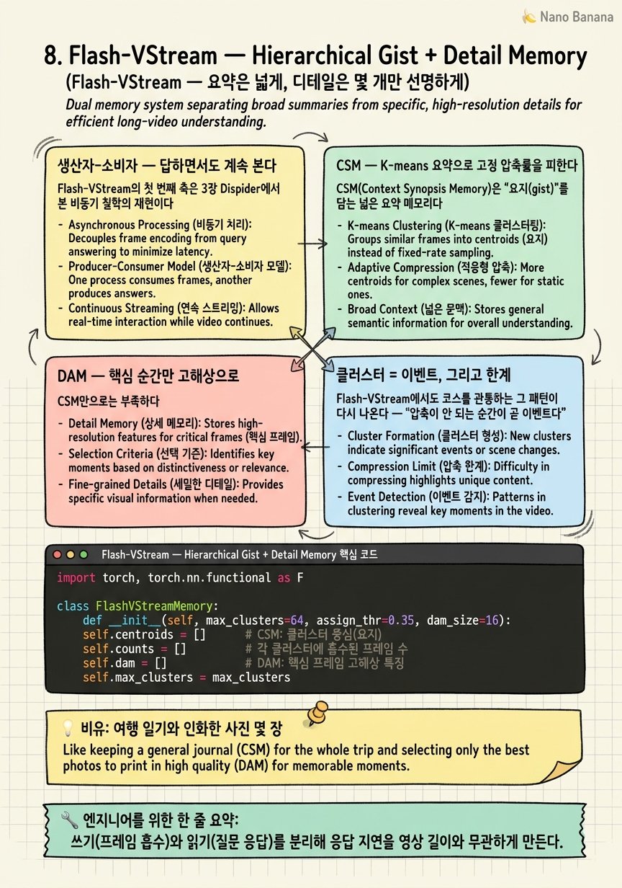

Flash-VStream — Hierarchical Gist + Detail Memory

🎯 학습 목표
- 생산자-소비자 분리가 응답 지연을 영상 길이와 무관하게 만드는 원리를 안다
- CSM의 K-means 요약이 고정 압축률 문제를 어떻게 회피하는지 설명한다
- DAM이 핵심 프레임 디테일을 별도 보관하는 이유를 안다
- 특징 레벨 압축이 KV 레벨보다 상류라 절감폭이 큰 이유를 이해한다
- 새 클러스터 생성을 이벤트 신호로 읽는 패턴을 안다
Stage ② 기억 관리의 마지막 논문 Flash-VStream은 지금까지의 KV 중심 접근과 결이 다르다. KV cache를 압축하는 대신, 특징(feature) 레벨에서 계층형 외부 메모리를 구성한다. 그리고 사람의 기억 구조 — "하루는 요약으로 기억하고, 인상적인 순간 몇 개만 선명하게 남긴다" — 를 그대로 모델에 옮긴다.
두 개의 축이 있다. 첫째는 생산자-소비자 2프로세스 구조로, 3장 Dispider의 비동기 철학을 메모리 계층에 적용한다 — 프레임을 흡수하는 프로세스와 질문에 답하는 프로세스를 분리해, 답변 중에도 프레임을 계속 받아들인다.
둘째는 2단 계층 메모리다. CSM(Context Synopsis Memory)이 K-means로 유사 프레임을 요약해 "gist(요지)"를 만들고, DAM(Detail Augmentation Memory)이 핵심 프레임의 고해상 특징을 별도로 보관한다. 요약은 넓게 깔고, 디테일은 몇 개만 선명하게 — 이 이원 구조가 "메모리 계층화 계열의 원형"이 되었다. 그리고 여기서도 코스 전체의 패턴이 재등장한다 — 새 프레임이 기존 클러스터에 안 붙고 새 클러스터를 만드는 순간이 곧 새로운 장면의 등장이다.
핵심 내용
생산자-소비자 — 답하면서도 계속 본다
Flash-VStream의 첫 번째 축은 3장 Dispider에서 본 비동기 철학의 재현이다. 다만 이번엔 역할이 아니라 프로세스 단위로 나눈다.
두 개의 독립 프로세스가 돈다.
- 프레임 핸들러(생산자) — 들어오는 프레임을 메모리에 쓰기만 한다.
- 질문 핸들러(소비자) — 메모리에서 읽기만 해서 질문에 답한다.
이 분리의 효과가 크다. 질문에 답하는 동안(무거운 생성)에도 프레임 핸들러는 멈추지 않고 새 프레임을 계속 흡수한다. 그래서 응답 지연이 영상 길이와 무관해진다. 아무리 긴 영상이 흘러도, 답변 생성은 그동안 쌓인 메모리를 읽기만 하면 되니 길이에 비례해 느려지지 않는다.
3장 Dispider가 "Perception은 항상 켜두고 Reaction은 별도 스레드"였던 것과 같은 원리다. 차이는 Dispider가 인식-판단-생성이라는 역할 축으로 나눴다면, Flash-VStream은 쓰기-읽기라는 데이터 접근 축으로 나눴다는 점이다. 둘 다 "말하는 동안 눈을 감지 않는다"는 파이프라인 동기화 해법의 변주다.
이 생산자-소비자 구조는 메모리가 공유 상태로서 두 프로세스 사이의 유일한 접점이 되게 한다. 따라서 메모리를 어떻게 설계하느냐가 시스템 전체의 성능을 좌우한다 — 그것이 다음 두 섹션의 CSM과 DAM이다.
CSM — K-means 요약으로 고정 압축률을 피한다
CSM(Context Synopsis Memory)은 "요지(gist)"를 담는 넓은 요약 메모리다.
작동 방식은 K-means 클러스터링이다. 들어오는 프레임 특징들을 유사한 것끼리 클러스터로 묶고, 각 클러스터를 대표 벡터로 응축한다. 비슷한 장면 100프레임이 있으면 그것을 하나의 대표 벡터로 요약하는 것이다.
이 방식의 영리한 점은 고정 압축률 문제를 자동으로 회피한다는 것이다. 6장 LiveVLM의 한계를 기억하는가 — 스트림 내내 일정 비율로 압축해서 정보 밀도 변화에 무감했다. K-means는 다르다.
- 정적인 구간(비슷한 프레임 다수) → 하나의 클러스터로 강하게 응축(메모리 적게 씀) - 변화 많은 구간(제각각인 프레임) → 여러 클러스터로 분산(메모리 많이 씀)
즉 정보량에 비례해 메모리가 자동 배분된다. 한산한 복도 10분은 한두 클러스터로, 사건이 폭발하는 10초는 여러 클러스터로 — 정보가 많은 곳에 자연스럽게 더 많은 표현 용량이 간다. 이것은 6장에서 "고정 압축률은 정보 밀도 변화에 무감하다"고 지적한 한계에 대한 서로 다른 답이다. StreamMem이 중요도 재선별로 풀었다면, Flash-VStream은 클러스터 개수의 자연스러운 배분으로 푼다.
DAM — 핵심 순간만 고해상으로
CSM만으로는 부족하다. K-means 요약은 클러스터 중심(centroid)이라 결국 "평균"이므로, 개별 프레임의 미세한 디테일이 뭉개진다. 결정적 순간의 세부 정보가 요약 과정에서 사라질 수 있다.
DAM(Detail Augmentation Memory)이 이 빈틈을 메운다. 클러스터 분포를 기반으로 핵심 프레임의 고해상 특징을 별도로 보관하는 부록 메모리다. 요약본(CSM)에 더해, 몇 개의 중요한 순간만큼은 원본에 가까운 선명한 디테일로 남긴다.
답변 시에는 둘을 결합한다 — CSM의 넓은 요약으로 전체 맥락을 잡고, DAM의 선명한 디테일을 덧붙여 구체적인 질문에 답한다. "하루 전체는 요약으로 기억하되, 인상적인 순간 몇 개는 사진처럼 선명하게 기억하는" 인간 기억과 똑같은 이원 구조다.
| 메모리 | 역할 | 표현 | 비유 | |---|---|---|---| | CSM | 넓은 맥락(요지) | K-means 요약 벡터 | 하루의 흐릿한 전체 인상 | | DAM | 핵심 디테일 | 고해상 프레임 특징 | 몇몇 결정적 순간의 선명한 사진 |
이 계층화가 "메모리 계층화 계열의 원형"으로 불리는 이유다. 이후 많은 스트리밍 메모리 설계가 "요약 계층 + 디테일 계층"이라는 이 이원 구조를 계승한다.
비용 관점의 핵심은 이 압축이 특징 레벨에서 일어난다는 점이다. KV cache보다 상류이므로 절감 폭이 더 크다 — KV로 변환되기 전 단계에서 이미 정보를 줄이니, 이후 모든 KV 관련 비용이 함께 줄어든다.
클러스터 = 이벤트, 그리고 한계
Flash-VStream에서도 코스를 관통하는 그 패턴이 다시 나온다 — "압축이 안 되는 순간이 곧 이벤트다".
CSM의 K-means를 생각해보자. 평소엔 새 프레임이 기존 클러스터 중 하나에 무난히 흡수된다(비슷한 장면이니까). 그런데 새 프레임이 어떤 기존 클러스터에도 잘 안 붙어서 새 클러스터를 만드는 순간 — 이것은 정의상 "지금까지와 다른 새로운 장면이 등장했다"는 뜻이다.
즉 새 클러스터의 생성 자체가 새로운 장면·이벤트의 후보 신호다. 2장 TimeChat-Online에서 "drop률 급증 = 이벤트"였고, 여기서는 "새 클러스터 생성 = 이벤트"다. 압축(기존 클러스터로의 흡수)이 실패하는 지점이 곧 새 정보의 유입 지점이라는, 이 코스의 두 번째 구체적 사례다.
한계도 분명하다.
- 시간 순서가 흐려진다. 클러스터 중심은 "평균"이라, 여러 시점의 프레임이 한 클러스터로 뭉치면 시간 순서 정보가 뭉개진다. "A가 B보다 먼저였나?" 같은 시간 추론에 약하다.
- 빠진 디테일은 영구 소실. CSM 요약에서도, DAM 선별에서도 빠진 정보는 되돌릴 수 없다. ReKV처럼 원본을 다 보관하는 게 아니기 때문이다.
- training-free가 아니다. CSM·DAM은 전용 메모리 모듈이라 학습이 필요하다. ReKV·LiveVLM의 이식성과 대비되는 약점이다.
정리하면 Flash-VStream은 계층형 메모리라는 강력한 구조적 아이디어를 제시했지만, 시간 추론 약화와 이식성 저하라는 대가를 치른다. Stage ②의 다섯 논문이 각각 다른 트레이드오프로 같은 병목을 공략했음을, 이 마지막 장에서 종합적으로 보게 된다.
💡 비유로 이해하기
긴 여행을 다녀온 사람이 기억을 남기는 방식을 보자. 매 순간을 동영상으로 다 찍어 보관하면(ReKV) 완벽하지만 용량이 감당 안 된다. 그래서 대부분의 사람은 두 가지를 병행한다.
하나는 여행 일기(CSM)다. "3일차는 온종일 해변에서 쉬었다"처럼 비슷한 순간들을 한 문장으로 뭉쳐 적는다. 한가한 날은 한 줄로, 사건이 많던 날은 여러 문단으로 — 자연히 일이 많았던 날에 더 많은 잉크가 간다(K-means의 자동 용량 배분). 다른 하나는 인화한 사진 몇 장(DAM)이다. 일기로는 뭉개지는 결정적 순간 — 프러포즈한 노을, 처음 본 오로라 — 만큼은 선명한 사진으로 따로 남긴다.
나중에 "그 여행 어땠어?"라고 물으면, 일기로 전체 흐름을 말하고 사진 몇 장으로 하이라이트를 보여준다. 그리고 흥미로운 신호 — 일기를 쓰다가 "오늘은 완전히 새로운 일이 있었다"며 새 문단을 시작하는 순간이 바로 그 여행의 사건이 터진 지점이다(새 클러스터=이벤트). 단, 일기는 날짜가 뒤섞이기 쉽고(시간 순서 약화), 일기에도 사진에도 안 남긴 순간은 영영 잊힌다.
💻 코드 예시
Flash-VStream의 계층 메모리를 개념 구현으로 보자. 새 프레임을 기존 클러스터에 흡수하거나 새 클러스터를 만들고(=이벤트 신호), 핵심 프레임은 DAM에 고해상으로 별도 보관한다.
import torch, torch.nn.functional as F
class FlashVStreamMemory:
def __init__(self, max_clusters=64, assign_thr=0.35, dam_size=16):
self.centroids = [] # CSM: 클러스터 중심(요지)
self.counts = [] # 각 클러스터에 흡수된 프레임 수
self.dam = [] # DAM: 핵심 프레임 고해상 특징
self.max_clusters = max_clusters
self.assign_thr = assign_thr
self.dam_size = dam_size
def add_frame(self, feat, hi_res_feat, saliency):
"""feat: 요약용 특징. hi_res_feat: 고해상 특징. saliency: 중요도 점수."""
new_scene = False
if self.centroids:
C = torch.stack(self.centroids)
dist = 1.0 - F.cosine_similarity(feat.unsqueeze(0), C, dim=-1)
j = dist.argmin().item()
if dist[j] < self.assign_thr: # 기존 클러스터에 흡수
n = self.counts[j]
self.centroids[j] = (self.centroids[j]*n + feat) / (n+1) # 중심 갱신
self.counts[j] += 1
else:
new_scene = True # 어디에도 안 붙음 = 새 장면!
else:
new_scene = True
if new_scene and len(self.centroids) < self.max_clusters:
self.centroids.append(feat.clone()) # CSM에 새 클러스터
self.counts.append(1)
# DAM: 중요한 순간만 고해상으로 별도 보관 (핵심 프레임 부록)
if saliency > 0.7:
self.dam.append(hi_res_feat)
if len(self.dam) > self.dam_size:
self.dam.pop(0)
return new_scene # True면 이벤트 후보 신호
def answer_context(self):
"""질문 응답용: 넓은 요약(CSM) + 선명한 디테일(DAM)을 결합."""
gist = torch.stack(self.centroids) if self.centroids else None
detail = torch.stack(self.dam) if self.dam else None
return gist, detail
add_frame의 분기가 CSM의 핵심이다 — 새 프레임이 가장 가까운 클러스터와 assign_thr보다 가까우면 그 클러스터에 흡수되어 중심이 갱신되고(정적 구간→소수 클러스터로 응축), 어디에도 안 붙으면 new_scene=True가 되어 새 클러스터가 생긴다. 이 new_scene 반환값이 곧 '압축 실패 = 이벤트' 신호다. 클러스터 개수가 정보량에 따라 자연히 늘고 줄어 고정 압축률 문제를 피한다. DAM은 별개 경로다 — saliency > 0.7인 핵심 프레임만 hi_res_feat로 따로 쌓아, 요약에서 뭉개질 디테일을 선명하게 보존한다. answer_context가 둘을 결합해 반환하는 것이 '넓은 요약 + 몇 개의 선명한 디테일'이라는 계층 메모리의 답변 전략이다.
🏭 현업에서의 평가
✅ 시니어가 보는 것
- 생산자-소비자 분리가 응답 지연을 영상 길이와 무관하게 만드는 원리를 설명하는가
- K-means 요약이 고정 압축률 문제를 정보량 기반 배분으로 회피함을 이해하는가
- 요약(gist)과 디테일(detail)을 나누는 이유와 각 한계를 아는가
⚠️ 레드 플래그
- 요약만으로 충분하다며 디테일 소실·시간 순서 약화를 간과
- 특징 레벨 압축과 KV 레벨 압축을 구분하지 못함
- 클러스터 중심의 '평균화'가 시간 추론을 해친다는 점을 놓침
🎤 예상 인터뷰 질문
- 생산자-소비자 구조가 응답 지연을 왜 영상 길이와 무관하게 만드는가?
- K-means 요약이 고정 압축률 대비 정보 밀도 변화에 어떻게 적응하는가?
- 이 메모리가 '3분 전과 5분 전 중 뭐가 먼저였나' 질문에 약한 이유는?
✨ 핵심 요약
생산자-소비자
쓰기(프레임 흡수)와 읽기(질문 응답)를 분리해 응답 지연을 영상 길이와 무관하게 만든다.
CSM 요약
K-means로 유사 프레임을 응축 — 정보량에 비례해 메모리를 자동 배분한다.
고정 압축률 회피
클러스터 개수가 자연히 늘고 줄어 정보 밀도 변화에 적응한다.
DAM 디테일
핵심 프레임 고해상 특징을 별도 보관해 요약에서 뭉개질 디테일을 살린다.
특징 레벨 절감
KV보다 상류인 특징 레벨에서 압축해 절감 폭이 크다.
새 클러스터=이벤트
기존 클러스터에 안 붙는 프레임이 곧 새 장면 신호 — 압축 실패=이벤트.
시간·이식성 한계
클러스터 평균이 시간 순서를 흐리고, 전용 모듈이라 재학습이 필요하다.